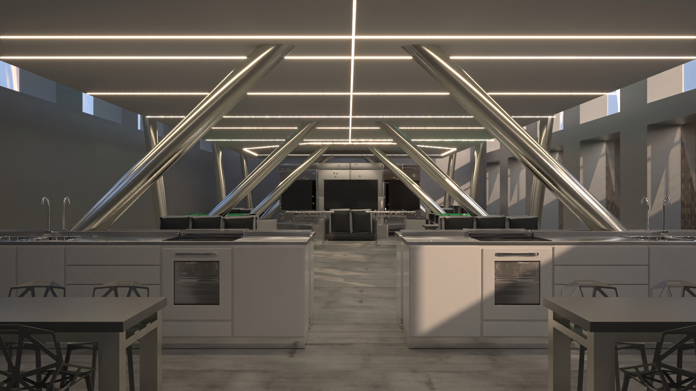
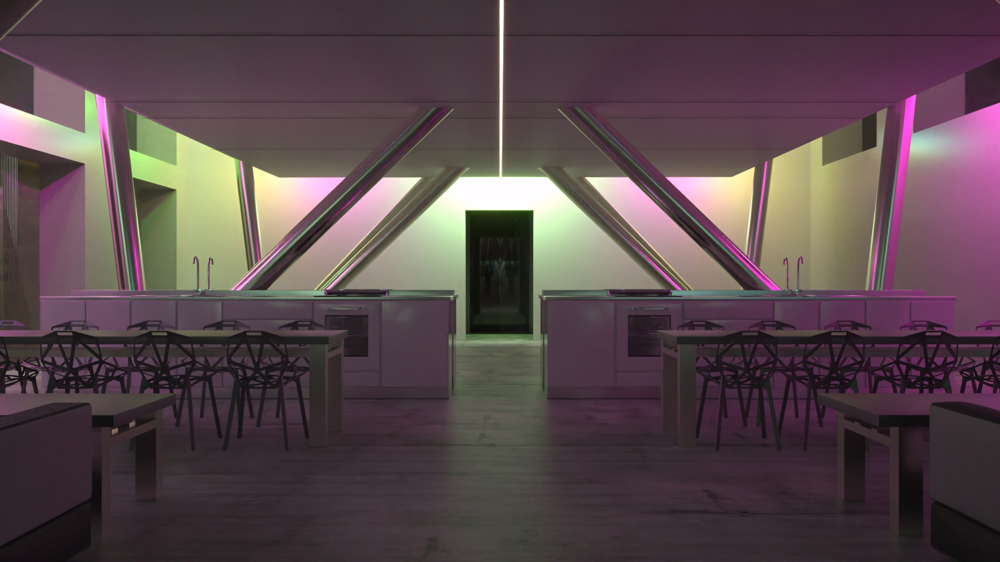
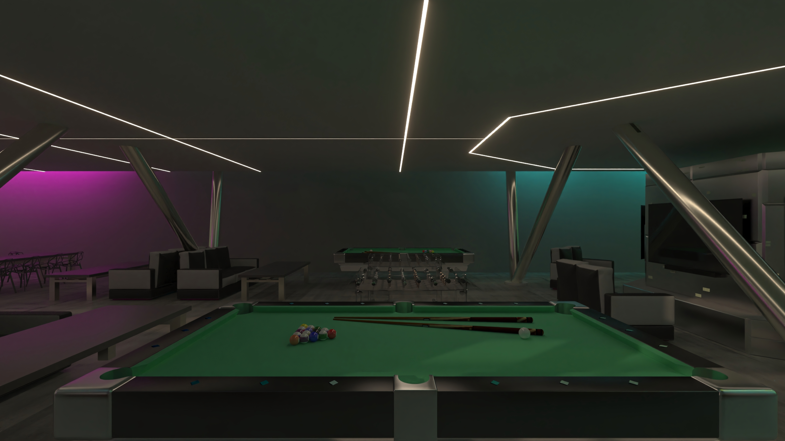
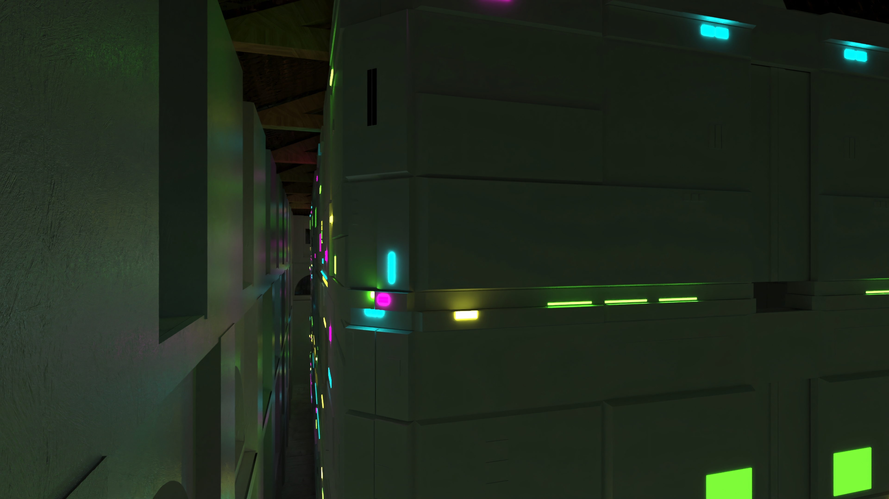
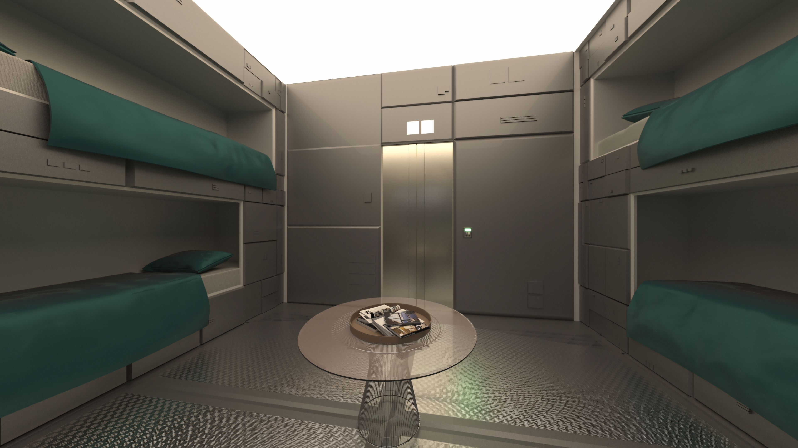

VASA-94
Villa Ada Space Ark 94
Immerso nel cuore verde di Roma, tra i quartieri Parioli e Trieste, si cela un tesoro storico dal fascino neoclassico: le ex Scuderie di Villa Ada Savoia. In questo contesto di inestimabile valore, a pochi passi dall'Ambasciata d'Egitto, nasce un progetto architettonico audace che si pone l’obiettivo di conferire al complesso un’identità senza precedenti, trasformando l’edificio storico in una struttura futuristica capace di dialogare con il proprio passato attraverso un linguaggio contemporaneo e visionario.
Il fulcro dell'intervento risiede nella reinterpretazione dei volumi e delle profondità. L’elemento distintivo è la creazione di un fossato di 3 metri che circonda il palazzo, un segno netto nel terreno che non solo valorizza l’imponenza della facciata originaria, ma permette l’integrazione funzionale di un piano aggiuntivo. Lungo il perimetro del fossato, spettacolari gradinate terrazzate offrono ai visitatori prospettive inedite per ammirare la struttura, mentre una moderna rampa dedicata garantisce la totale accessibilità, fondendo estetica e inclusività.
L’anima più sorprendente del progetto si rivela però all’interno. Con un gesto architettonico radicale, i solai preesistenti vengono eliminati per dare vita a una struttura in metallo sospesa, sorretta da soli due o tre punti d’appoggio. L'utilizzo di metalli leggeri e riflettenti crea un effetto scenografico di ispirazione cinematografica, conferendo agli ambienti un’aura "hollywoodiana" e sofisticata.
A completare questa metamorfosi è l’integrazione tecnologica: un sistema domotico d’avanguardia gestisce una rete di punti luce puntiformi, capaci di variare colore e intensità per creare scenografie personalizzate. Il risultato è un’atmosfera incantata, con richiami estetici allo stile cyberpunk, dove la luce diventa materia architettonica. Questo progetto non è solo un recupero, ma una dichiarazione d'intenti: un ponte tra la memoria storica della Città Eterna e un futuro fatto di trasparenze, riflessi e innovazione.
Progetto accademico sviluppato presso RUFA (Rome University of Fine Arts), Terzo anno (anno accademico 2023/2024). Sviluppato con la supervisione del Prof. Giuseppe Ragosta.









